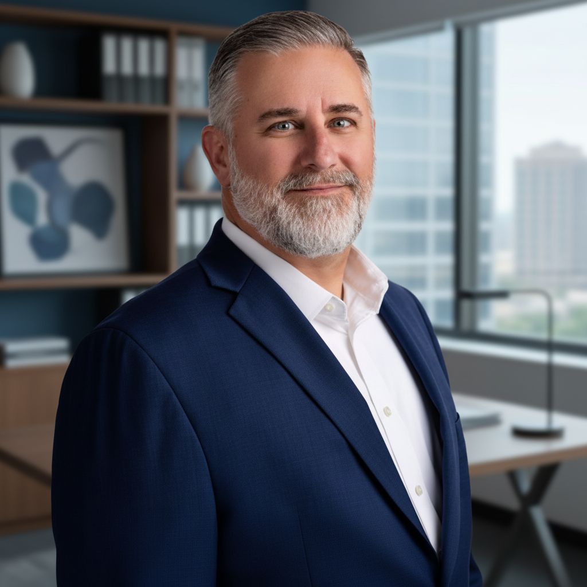

A Team Built on Accountability & Excellence
NSW is powered by experienced professionals who bring technical expertise, personal accountability, and genuine care to every project. From the office to the field, our team operates as a cohesive unit — guided by our core values and a relentless commitment to delivering for our clients.

Clint Morgan
As founder and President of NSW Integrated Systems, Clint has built the company on a foundation of strong relationships, integrity, and a commitment to doing what is right. His leadership philosophy centers on empowering people, fostering accountability, and creating a family oriented culture where individuals are encouraged to grow and succeed. Clint remains actively involved in shaping the company's vision, strengthening strategic partnerships, and ensuring NSWIS stays true to the values on which it was founded.

Jerry Hayden
Jerry leads the strategic direction and daily operations of NSW Integrated Systems, bringing decades of experience in the low voltage systems integration industry. With a leadership philosophy centered on relationships, accountability, and operational excellence, he is passionate about building strong teams, developing lasting client partnerships, and creating a culture where people and businesses thrive. Jerry believes that long term success is built on trust, integrity, and consistently delivering on commitments.
Sammey Jo Smith
Sammey Jo leads strategic partnership development at NSW Integrated Systems, bringing a relationship driven approach to business growth and client engagement. With a passion for connecting people, understanding client needs, and creating lasting partnerships, she plays a key role in expanding NSWIS's presence throughout San Diego. Her industry knowledge, collaborative leadership, and commitment to delivering value help strengthen relationships with clients, general contractors, and industry partners while creating opportunities for sustainable growth.
Art Ocegueda
Art leads project management and field operations at NSW Integrated Systems, bringing a hands on leadership approach focused on accountability, teamwork, and operational excellence. He oversees project execution from preconstruction through completion, ensuring teams have the resources, direction, and support needed to succeed. With a commitment to developing people, improving processes, and delivering exceptional results, Art plays a critical role in maintaining NSWIS's standards for quality, performance, and client satisfaction.
Shaun Lomax
Shaun leads the Service Department at NSW Integrated Systems, bringing a client focused approach to technical support, system reliability, and long term customer satisfaction. With a strong technical background and a commitment to responsive, dependable service, he oversees the teams responsible for maintaining and supporting clients' critical security and technology systems. Shaun's leadership emphasizes accountability, proactive problem solving, and building lasting client relationships through consistent service excellence.